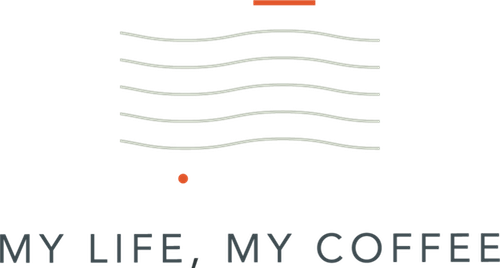

Like many endeavors, the genesis of Sodoi spans back centuries. Jae Chung, Bob Baldwin, and Robert Hensley have nearly 100 years of combined experience in coffee trading, roasting, blending and serving. In addition, their mentors have passed knowledge gained from a lifetime in the coffee industry. Sodoi stands firmly on a foundation of 200 years combined industry expertise. Our knowledgeable, consumer-oriented and skilled team provides you with the best quality product and customer service.
Sodoi's deeply rooted history extends back generations. Bob and Robert have been honored to call Alfred Peet (founder of Peet's Coffee & Tea) a mentor and friend. In addition to acquiring the vast knowledge and experience by working with Mr. Peet, Bob and Robert worked for Probat Burns, a German roasting company founded in 1864. Together, they built, restored, installed, and trained on roasting equipment, which extended from vintage machines of the early 20th century to the most refined and advanced roasting equipment built today.
All of us at Sodoi are blessed to stand on the shoulders of giants in the industry who have come before and helped us discern between what adds value to our customer's experience and what is merely the latest fad or simple shortcut and pretense to quality. These past masters of the art and science of coffee include dedicated professionals across the full spectrum of producing great coffee, from growers and millers, to roasters and brew masters. We give thanks to all the efforts of those who have blazed the trail before us.
